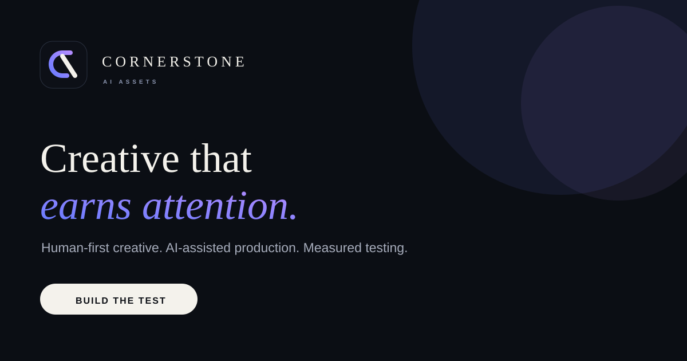

Distribution intelligence
Find a format worth repeating.
The goal is not to make one beautiful post. It is to find structures the audience already responds to, validate them in the live feed, then turn winners into a repeatable content bank.

01 · Research
Start with what is already moving.
We study recent examples in the niche, not generic advice from six months ago.
Formats earn a place in the bank when the structure is visible in multiple relevant examples and is simple enough to reproduce. The live feed is the source of truth; the system only organises what the market is already showing us.
02 · Format bank
01
Problem
Specific frustration or realisation.
02
Ranked list
Curiosity through ordered information.
03
Before / after
The output is the proof.
04
Contrarian
A real disagreement worth commenting on.
05
Quiet
Observation, diary and lived context.
06
Reply
Turn real comments into the next post.
03 · Scale the winner
Do not get bored.
When a structure wins, we keep the psychological mechanism and build controlled variations around it. Same DNA. New surface details.
04 · Measure
Views are not enough.
We track retention, saves, shares, comments, profile actions and the business outcome. A smaller format that converts beats a viral format that does not.
05 · Content bank
Document the pattern.
Every validated format gets a name, structure, examples, hook logic, caption pattern and replication notes so production can move faster without becoming generic.
Distribution is part of the product